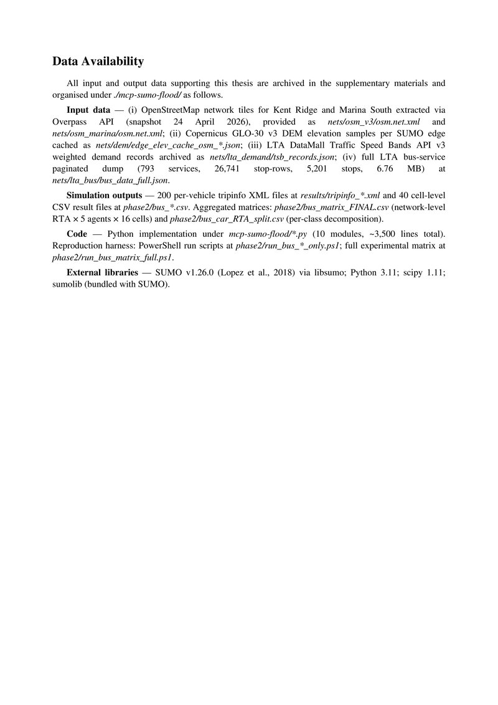
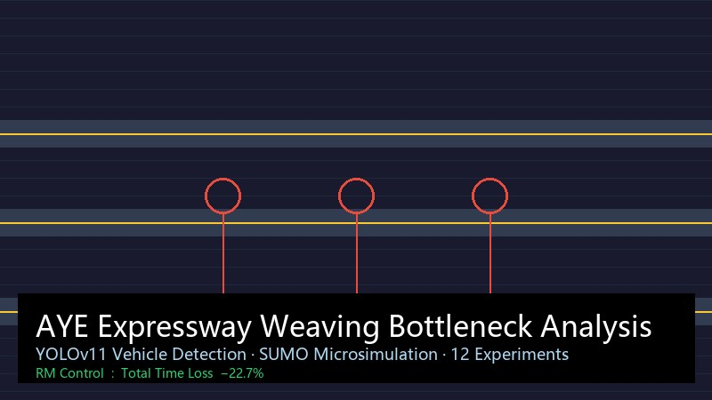
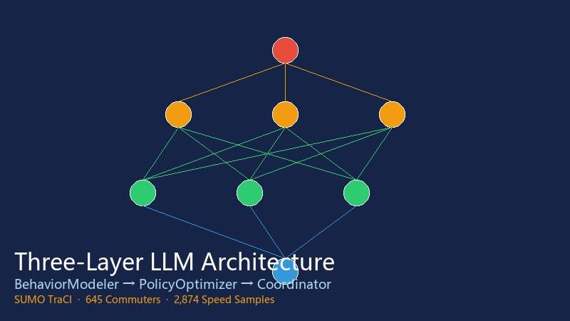
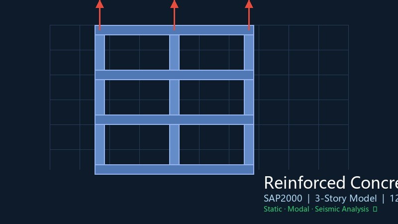

货物签收系统
工地材料收货数字化：系统物料代码、后台 CRUD、条码/QR 标签、扫码预填、照片留证与通知中心；完成部署说明与真机冒烟验证。
- React + Node + SQLite
- Module A 主数据 · Module B 视觉扫码
- PRD / 架构 / 安全加固
我是罗文杰，就读于新加坡国立大学（NUS）土木工程硕士 （运输与城市交通方向）。主线方向是 AI 产品与多智能体交通： 把 LLM Agent、规则策略与 SUMO 仿真放进可统计检验的效果评测闭环。
我关注大模型在实时系统中的能力边界、安全性与时延约束， 并具备 PRD / 原型 / VOC 用户洞察的产品链路经验。工程背景（有限元、跨境项目协同） 帮助我把方案落到可验证的数据与交付物上。
当前在中建国际远东幕墙（新加坡）实习（2026.06.23 起），同步有奇瑞国际、彩讯科技、Expeditors 经历。 正在寻找 2026 秋招 / 2027 届机会，可长期实习（≥6 个月），预计 2027.01 毕业。
SUMO 微观仿真 · DUE 均衡 · 公交可达性 · 交通韧性评估
核心匹配SAP2000 框架抗震 · ABAQUS 渗流/热传导 · 模型标定与缺陷溯源
强匹配Function Calling · 规则+LLM 混合架构 · 效果评测与数据闭环 · Prompt 工程
主投方向PRD 撰写 · Axure 原型 · VOC / 用户画像 · 竞品分析 · 跨团队推进
4 段实习土木工程硕士 · 运输与城市交通方向
交通运输学士 · 卓越工程师班
项目 SLTO / PD218 · 英文工作环境 · 直属工程协同
在幕墙工程项目中并行推进 现场数字化工具、PLM/邮件自动化、材料与物流台账、E-Filing 合规、技术提交协调。 用「能落地的小工具 + 可核对的数据表」把重复人工动作变成可复用流程。
远东幕墙（新加坡）· 近期 intern 交付主线，按业务线整理
工地材料收货数字化：系统物料代码、后台 CRUD、条码/QR 标签、扫码预填、照片留证与通知中心；完成部署说明与真机冒烟验证。
从 Windchill PromotionNotice 批量拉附件与提料单；支持空主题转发、正文提取、送工地/送工厂自动分类与完整性汇总报告。
VMU 分批（Tower / Podium / FINS / Windows / Sailing）物料跟踪；船期与订舱对照；密封胶/铝板/玻璃送样与实验室性能测试协同。
按项目文档标准审计 JOB 目录与命名；补齐缺失类别；Word/PDF 转档与打印清晰度检查，保障提交包可交付。
幕墙 3D 阴影分析与外观可视化；PQP 演示文稿批量 16:9 规范化（页眉页脚、页码、版式钳制）；支撑方案评审与业主沟通。
催交关键技术文件、对接总包与分包节点；组织安全培训；用简洁英文短讯同步新加坡侧干系人，避免信息断层。
内容来源：实习工作日志与交付物沉淀 · 已脱敏内部路径与敏感联系人
新加坡国立大学 CE5001

新加坡国立大学 CE5203

新加坡国立大学 CE5212

新加坡国立大学 课程项目

长安大学
ABAQUS 仿真项目
牵头开展10余场主题团日活动，组织团员参与率100%；策划8次社区志愿服务，搭建朋辈帮扶平台助力20余名同学对接就业资源；获校"优秀团员"称号。
负责足协抖音公众号信息采编与运营，采编20余条信息、影像和视频内容。
负责同学生活和心理方面工作，及时发现并协助解决同学心理状态波动问题。
来自项目与实验的可验证结论，点击跳转到对应项目。
📌 正在寻找 2026 秋招 / 2027 届机会
意向：AI 产品经理 · 智能交通 · 多智能体系统